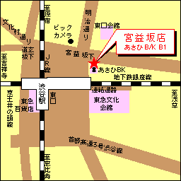

Ресторан Тенґу, Шібуя
Table of contents
|
 |
На Yahoo! Map це місце знаходиться тут: http://map.yahoo.co.jp/pl?nl=35.39.22.395&el=139.42.22.114 Для орієнтації, пам'ятник Хачіко на Шібуї на Yahoo! Map: http://map.yahoo.co.jp/pl?nl=35.39.21.662&el=139.42.14.949&la=1&sc=1&CE.x=203&CE.y=293 |
Адреса ресторану, Японською
|
Адреса ресторану англійською
| ||||||||||||
Веб-сторінка
http://www.teng.co.jp/tenpo/map/map033.htmlЯк впізнати ресторан Тенгу
|
|
Всі ресторани мережі Тенгу несуть на собі традиційне зображення персонажа з легенд. Тенгу — лісовичок з червоним лицем і довгим носом. На всіх зображеннях він виглядає абсолютно однакого. Тому, побачивши його один раз (ліворуч) Ви вже не помилитесь. Інколи замість вивіски з намальованим Тенгу висить велика маска . |
Створений : dmytro.
останні зміни: Четвер 02 з December, 2004 17:54:04 JST dmytro.
Оригінал документу знаходиться на http://tiki/kraiany/tiki/tiki-index.php?page=%D0%A0%D0%B5%D1%81%D1%82%D0%BE%D1%80%D0%B0%D0%BD%20%D0%A2%D0%B5%D0%BD%D2%91%D1%83%2C%20%D0%A8%D1%96%D0%B1%D1%83%D1%8F